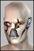

| Pages (6): « 1 2 [3] 4 5 » ... Last » |  Last Thread Next Thread Last Thread Next Thread  |
| Author | Thread |
| mazerex Leet  Registered: May 2002 | Manual My major issue is how to use the nanos per character. I'm new to the game and I'm still in the dark on it. A small explanation on how to use the equipment(aggression enhancers, targeting computers, and anything other than weapons, implants, medical devices, or armor. I read in the game when I hit the shift left click part but when I try to put, say for instance, an addition into one of the sockets of an implant with my agent I get messages saying I can't do that. Moving, attacking and other types of commands are pretty easy. The advanced ones seem to be all in order, unless there are some that are not listed for the keyboard listing. This is just from a newbies standpoint though. I love this game so far, it's just the part about finding out how to do all the cool tricks everyone else is doing that makes it confusing. |
 May 30th, 2002 21:34 May 30th, 2002 21:34 | #41 |
| afiz Leet  Registered: May 2002 | You have done your manual as a dictionary: trying to give some definitions. Thats good, but not sufficient. You must explain how theses things have impacts on the game. 1)Breeds, skills, professions and even affiliations needed to be explained in game terms (ex : what are the modified skills from a breed, how and on what psychology is used, what are the advantages and disadvantages to be neutral, or clan, 2)The mission interface must be explained (yes I know it is on the newbie guide, but it is so used than you should put it here too): what is the difference between good and Head-on, is the Cash-xp modify the given item ?... 3)A how to system should answer common questions: how to create items, how to use the grid, how to use hacking tools, how works the agr-def lever, 4)Try to give some technical information on things that are displayed in the screen (ex : the number in brackets after the min max damages, ) or that are not displayed (what is the chance to make a critical hit, does my rage weapon skill have an impact on my chances to hit, to make more damages, or is it just a way to have better weapons, ) A imho good avice : have a look at the most used fan website, and how they have managed to explain breeds, professions, and skills. Afiz Sorry for my so poor English, Im a French gamer  |
| May 30th, 2002 21:56 | #42 |
| MugWump Leet Registered: May 2002 | 1. What a whompa was, why I needed to know this - this should be among the first things you explain! 2. What a nano program was, how to take one from inventory and upload it, then use it. 3. The process of updating nanos, where to find them, how to know which ones I can use, etc. 4. Implants, I am still clueless about these though I have some, but have no idea what to do with them. --- In general your manual was confusing, you need to rethink the way you present the info, some of the newbie info is decent, I was able to get hunting in the virtual area quickly, but the first char I created had to be trashed quickly after because of what I didnt know, and couldn't undo. But the way it was presented was not. Eventually when enough fan sites are about it'll be easier for new users, but for right now your manual is about all that I could find, and it still left me bumbling. |
| May 30th, 2002 22:19 | #43 |
| Brad, STL/MO Phear Leet  Registered: Nov 2001 | Umm, How Hard Can It Be? 1) Read the topic headlines in "Beginner's Forum" to find out what questions are asked most often. 2) Read the answers to the most common ones. 3) Correct the mistakes we've made trying to figure out undocumented parts of the game. 4) Add the result to the manual. I mean, gosh, guys - this ought to be obvious. The things that people are asking the most questions about are obviously the things they need explained better. Isn't that obvious? |
| May 30th, 2002 23:27 | #44 |
| Nozick - WMUB! Soleet  Registered: May 2002 | Solo trainer? Dont know whether this has been mentioned before...: a good deal of the manual could be dumped if there was some nice solo trainer which guided you to forming teams, uploading formulas etc. This could even be an offline thing for people with dial-ups. Cheers! Woolah! |
| May 31st, 2002 00:23 | #45 |
| Xeni Supa Leet  Registered: Nov 2001 | Re: Great input folks quote:Nais! Now some general inputs: As others here have said, we need a "Tradeskills for dummys". This together with the "tradeskills for dummys-kit - make your own lock-pick (invented by the agent Arlyne Cornelius  )" you can buy in startupshops, so people actually get to test this before they go into a shoppingfrenzy, would be good. )" you can buy in startupshops, so people actually get to test this before they go into a shoppingfrenzy, would be good. Also there is several other items that need a short introduction: belts and ncu's: cant find a guide for this. very essential for evry player after lvl15 if not before. Also write in description for comp lit that belts and ncu's use this skill. Will give some player a hint (dont forget the grid under the same). tutoring devices: write some words on those, use if you are a few points short in a skill. Stims and rechargers: need some words, stims vs rechargers. Break&entry:lockpicking and hacking of items need some words. Vechiles: need maybe a few words. Basic shops can be hard to find for noobs, give startup chars a document on how they can navigate to at least one shop. Also write some on the different shops, and how they work(what they sell and not sell). Some shops pay better than others for junk you wanna sell. Combat: (Primary and secondary) ((offensive and defansive) skills). Think before christmas some from FC posted a couple articles on team hunting. Rewrite those if needed and include those. You should write some about what possible hoax'es some people may try to use:"hey want to buy this yalmaha i found in mission.." etc. When writing about the breeds, write about breedcaps as this can make BIG differense for highlevel characters. Hit me hard as a opifex agent to breedcap intelligence at lvl 162 when i need that skill for nanoskills and treatment. what seemed like a advantage at lower levels turned out to be a disadvantage. If i had this knowledge when choosing breed last summer, there is big chance i ended up as nanomage actually. I saw in antiguardians testdatabase that you adds shops who sells profesionspecifc implants. Thats neat and makes it easier for people to understand implants. I also suggest you add link from what you write on implants to antiguardians implants tool. This will make people to figure out implants very fast to play a little with that tool. Say something about different clusters can make the implants to get different reqs, and also that different skill in NP can make the QL on implants vary some. Yes and the new OE rules need explanation, but i think you know how those work now  Last edited by Xeni on May 31st, 2002 at 03:12 |
| May 31st, 2002 03:01 | #46 |
| Arila Phear Leet  Registered: Jan 2002 | quote:R U NUBI?? Or just not reading at all? type: /petition help That bring up the help menu. type: /petition issue, problem ect hthat send a petition. type /petition delete that delete the petition |
| May 31st, 2002 05:15 | #47 |
| Ghump Soleet  Registered: Mar 2002 | Re: Mission creation missions quote:LOL I wouldn't count on that one making it into the final draft  /Ghump |
| May 31st, 2002 05:47 | #48 |
| Dubh Leet  Registered: Mar 2002 | Better first-time introduction to the game What the game needs is a quick introduction 'scenario' that steps players through the process of playing the various aspects of the game. I don't think a manual will do it, as most people install the game and jump right in. Another thing that would REALLY helpful is to have the camera in the game automatically set to 3rd person but locked behind the player when they first enter. The 'floating' camera when you first make your character is SO annoying and very confusing. I really like the female voice that helps you out when you first start, but it would be nice if she provided you with some instruction for common commands, how to move your character, improve your stats, etc. as you move through the introduction 'scenario' I suggested above. Hope that helps! Cheers, Dubh |
| May 31st, 2002 06:56 | #49 |
| Lictor Supa Leet Registered: Nov 2001 | * Add some short description of the basic categories of nanos (buffs, debuffs, wranglers, mezz...) and what they do... It's kind of annoying to have levels 50+ still not knowing what a mezz does or that a wrangler doesn't buff burst and hurts the Trader... * Add some short description of the various channels (vicinity, OCC, newbie, shopping...) and how to use them * Add some description of special properties (nodrop, unique...) * Add a very short description of groups tactics (tank, damage dealer, healer...) and add to profession description what they can do (crow control, XP leecher...) so that people can choose based on what role they want to play * PLEASE, add a short chapter on basic role-playing (difference between IC and OCC, what not to do...) and basic etiquette... Like the difference between NCP and PC (no, I'm not a buff machine, I'm a human being!), language and politness... |
| May 31st, 2002 07:09 | #50 |
| dan09 Supa Leet  Registered: May 2001 | When i started... i had no idea where I was, how to get anywhere, what the grid is, where the grid is, what a whompa is, a map of whompas, a map of any sort, how missions work, where shops are, what sort of shops there are, what all these skills where (though this did work by not using them till i found out what they were for) what my <Main> attrubutes were, how to chat to people (/tell), (/reply), (/shout) is really all you need to spell out to get started. and shift left click to see what something is. You really need maps to tell people where they are, memory at the start is already overwhelmed, you just shouldnt have to remember where this was, or where Rome blue is, or which way ROme green is. The start tips thing is great In fact the manual should a have a mission guide to play one solo, easy to do mission that explains everything. all classes could step through this, from telling you where to go to get there, how to upload, how to find, how to sell stuff, where to sell it and whicd store you should go to. This would be invaluable |
| May 31st, 2002 07:18 | #51 |
| Nyadach Who said I was a hippy?!  Registered: Sep 2001 | Once or twice a week in my free time I like to find a friendly Adventurer who will morph me into a cat or a leet, and I tend to go spend some time helping out in the backyards healing people and generally giving tips etc...why? who knows its fun seeing all this noobs trying to figure out what a leet is doing healing people. Anyhow, I've noticed on a few times now with people new to the game they have no idea what IP or the skill system is. You find for example a lvl4 soldier who was dying over and over as he hadn't spent one IP, and had no idea what it was. Yes IP is covered in the manual but it does come pretty well hiden and is easily overlooked. Theres a lot of info in the manual and this leads to people missing things. A ultra quick overview might be good for the front of the manual, maybe saying something like: When you do a trade skill or kill something you gain XP (as shown on the yellow bar on your stats menu), when this bar is full you gain a level of experience and with it Improvement Points (IP). IP is used to give you better abilities and help you survive when you spend them on skill. See xyz page for a detailed description. Kinda like a quick start guide for users. |
| May 31st, 2002 09:09 | #52 |
| Ibeme Leet Registered: May 2002 | Well, being a recent Newbie, I think I can note a few things that could make things easier for Newbies... 1 - First of all, There are tons of things available in AO. That is great, but newbies don't know what those things are, and are overwhelmed by the amount of stuff that is available. I still don#t know how to make use of an Instruction dist, and the first thing people find is Monster parts - Which I still don't know wht they are for. High lvl people will know what to do (or not to do) with items... 2 - Aside from tons of player written guides, there should be some kind of clue what ways a profession is good for. I started 8 characters over, and my highest is currently lvl 13. Yeah, you find that funny, but I don't. Sure, I could have been much higher, but I didn't want to live with my skilling mistakes at higher levels. Skilling mistakes I did becuse I literally didn't know what I was doing. Basicly, we need a list of skills, and what they are actually needed for so we can make a decicion if we want it or not. 3- Perhaps you could introduce some training mission. Special low level missions that explain things as you go on.. Boring to people who know it, but useful as a tutorial for people who need help. 4- Teams. Low level people don't know what makes up a good team. Sure, as a level 4 or so, it doesn't matter if it is a team of 4 docs, coz it will still be good enough to compete with the mobs at that level, but at higher levels, some people don't know where to go or what to do to find a team that will suit him best. Everyday I wanna find a team to go and hunt, but every day, I have trouble doing just that. I'd have leveled up going solo before I would have found a decent team. Most low level people like myself are glad when they have a team of 4, regardless if it fits or not. How is a newbie supposed to know what a good team is made of, and how they are supposed to work together? Well, I ran outta time.. /afk |
| May 31st, 2002 10:10 | #53 |
| Cenelia Supa Leet  Registered: Jan 2002 | Re: What to do first quote:now that could be nice(and the mpa too )lol, first time I played I managed to upload the buff(I think), but not at all how to use it  and newbie map thought it was the "P"-map(press p for map) so didn't upload it(kinda annoying in tir without a mpa hehe) the shortcut bar and special attacks(brawl, flingshot etc) would be nice too yup. Also a macro/pet attack guide for pet classes. Most asked question I get is how do you make your pet attack faster then type the whole thing, or "my bar has dissapeared, how do I get it back? (other newbie) bar? what bar? how do you use it?" uhm, maybe some note that you can look at stuff in the stores by shift-clicking on it? took me a while to figure that one out |
| May 31st, 2002 10:59 | #54 |
| Pray Leet  Registered: May 2002 | HelpBot!!! Probably more than 1/2 the "Does anyone know how I get to..." chat could be eliminated if more people knew how to use Helpbot or the Helpbot commands. "Where can I find Mutant Domain? , etc. etc. And how about giving us a REAL map of Rubi-Ka that has more than just the basic topography and a couple of main city names - the world is HUGE and the in-game map just doesn't cut it. Whole outposts and towns are missing! Exploring and finding new things is fun - wandering around in an empty field for an hour because you're lost sure isn't. Glad you're working on this and I wish I had it when I was a newb, Psynewave |
| May 31st, 2002 11:26 | #55 |
| Morphex Agent Professional  Registered: Nov 2001 | Agents needs to know what nanos we can use and what nanos we cant. I know there are ways of finding out in the item database, but we shouldnt have to go there to do it. Many agents who are new to the game are very confused because they dont know what they can and what they cant do. Many of them are even very confused about false profession at all... |
| May 31st, 2002 11:54 | #56 |
| Aristaeus Phear Leet Registered: Jan 2002 | Add in a clear advancement scheme on breeds. That is how much hp/level, nano/level and what abilities costs & how much they can be raised per level. Remove the up green skills is a must bit (also from the ingame stuff). There are a few green(ish) skills you just shouldn't raise and a few non green (for most profs/breeds) that you should. Add what they should improve per class. General, the entire ability tab (some people will argue don't raise str or an other stat if you don't use it a prof). And the evades (not green to most profs). Specific, things like for an engineer improve matter creations, time and space and all skills needed to use trimmers (those skills aren't light green you know or even green [IIRC]). It also allows you to ignore stuff like (what is now generally considered a waste of a skill) learning which is green for docs. Explain what evades do. Instead of avoiding attacks the lowering of the crit chance of the mob Explain the use of some items that most people would consider trivial but I've seen people get bummed on. These are lockpick, key duplicator, belt, NCU. Explain the use of static surgery clinics. I have had a person wondering at lvl 30 or so what they should do with those implants they found (extreme case but it highlights the problem). Explain the overequipping limit. Tell how to upload missionlocations. Just stand around the terminals used by new players and you get the 'How do I get to location X'-question at least 2 times an hour (the non-newbie zone terminals that is). Explain the different travel methods. First time I got in the game I heard people talk about the grid. Until I got a mission that accidentally ran me past a grid terminal and I clicked on it out of pure curiosity I had no clue what they were talking about. I found out what a whompa was because in the beginning I didn't know that most buildings are only there to house mission entrances so that I was trying out every door in the game. Explain what a cell scanner is. Not all people who are in the newbie areas take a look at the scanner that is stationed there. Explain how a bank works. Explain the different shop indications - superior/advanced/basic. Got quite lost the first time I hit a shop and saw all those nano's I could only use in 20+ levels. |
| May 31st, 2002 12:00 | #57 |
| Moomoocow Eleet  Registered: May 2002 | What Breed is best for profession? It should contain what breed to pick for a profession. Bad things and advantages. |
| May 31st, 2002 12:55 | #58 |
| Cz Registered: Nov 2001 | Great help folks. A lot of details I didn't have on my list yet. (Ok, it was hastily thrown together; I'll add that to my defense. )If you have more suggestions, please post them. I'll be checking this each day while working on the manual. |
| May 31st, 2002 14:10 | #59 |
| Tobruk Leet Registered: May 2002 | I started as an engineer and kept dying - then a kind fellow explained how to get a pet. How I still hate Rollerats, but I learned quickly that death hurt my XP bar bad! I learned to run away a lot.. I got an apartment I never use. Then I stumbled out of the Backyard into Newland City. And until I was Lvl6 and someone told me how to find a mission I ran around like a lost bee on its way to find a flower. Oh and I started dying a lot. Until I found the shop to buy stuff and sell stuff. Pet upgrade.. that was cool to discover. Then I went through the big door and ended up in Athens.. where I managed to die rather quickly - still gives me shivers. So up we went to Lvl17 when I decided to work out implants, but I am still (Lvl38) confused about whether the Treatment is just to put them in or permanently required to make them work (important with 14.2 + OE coming). At Lvl22 a very high lvl engineer spent 30 minutes explaining things to me.. so I went and bought some buffs AND the right implants AND a better bot. Anything in the manual (which I actually read) that prevents another nubi from getting the wrong end of everything, including leets and rollerats. Everyone else has mentioned them but I thought my sixpence was worth putting in. |
| May 31st, 2002 14:43 | #60 |
| Pages (6): « 1 2 [3] 4 5 » ... Last » | The saved copy (Funcom's forum archive, saved by the Wayback Machine in 2025) |
All times are GMT.